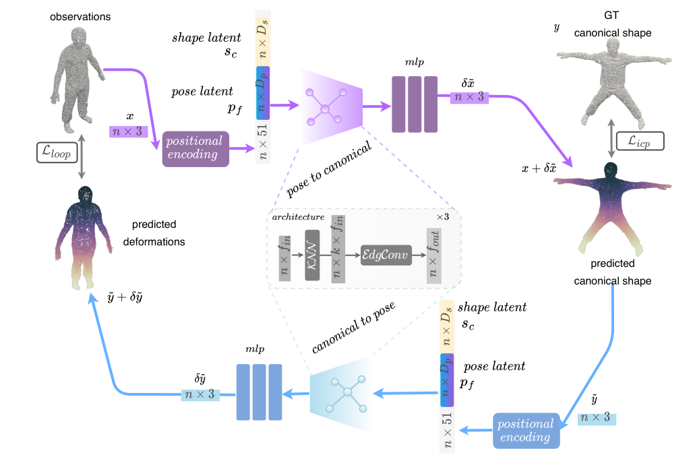
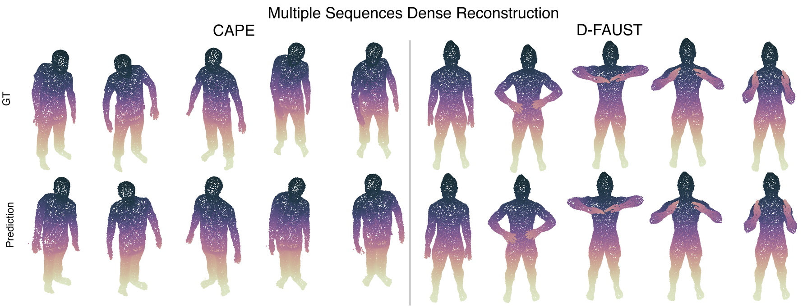
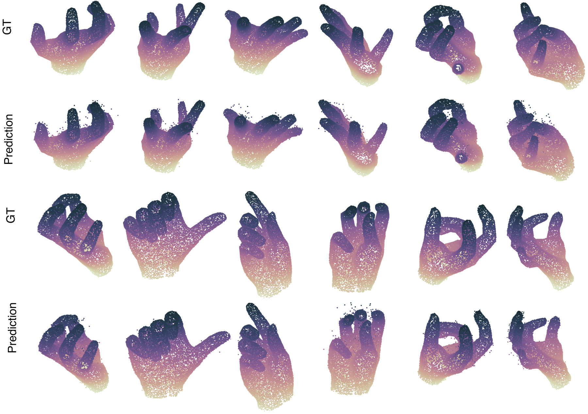
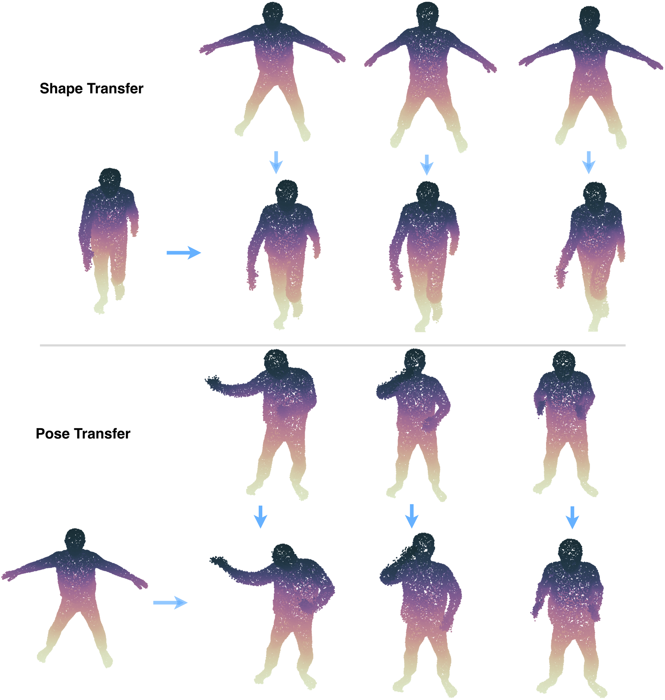
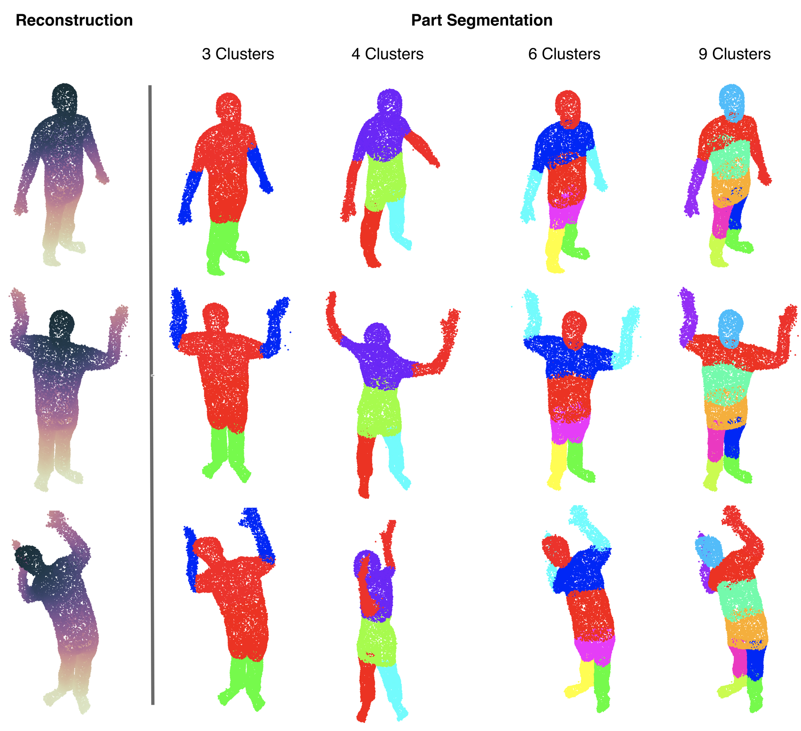
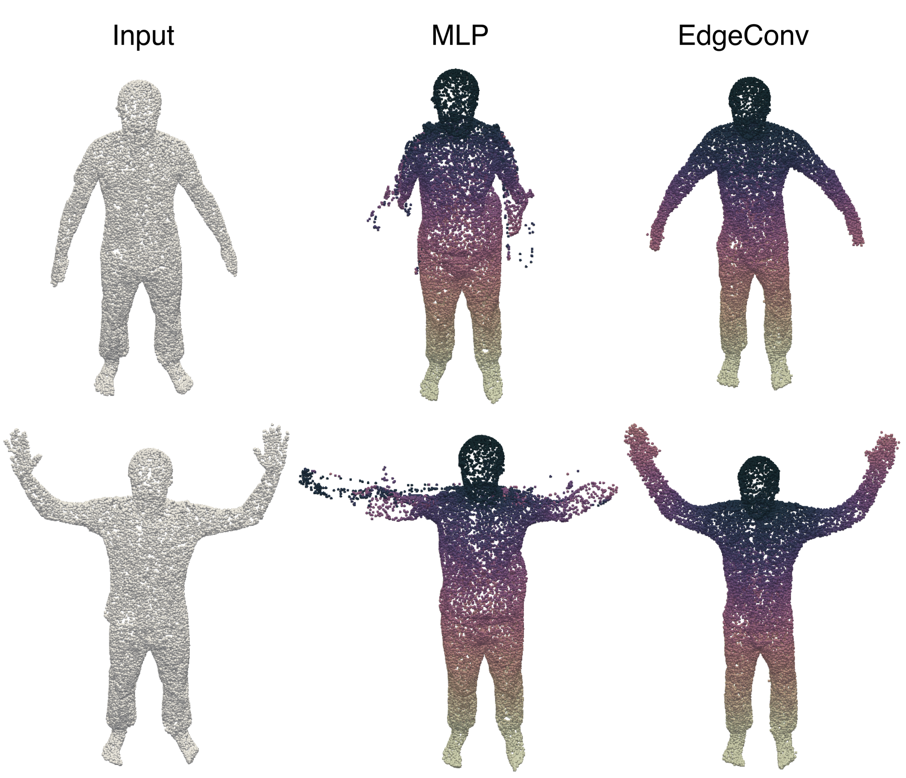

We propose Geometric Neural Parametric Models (GNPM), a learned parametric model that takes into account the local structure of data to learn disentangled shapes and pose latent spaces of 4D dynamics, using a geometric-aware architecture on point clouds. Temporally consistent 3D deformations are estimated without the need for dense correspondences at training time, by exploiting cycle consistency. Besides its ability to learn dense correspondences, GNPMs also enable latent space manipulations such as interpolation and shape/pose transfer. We evaluate GNPMs on various datasets of clothed humans and show that it achieves comparable performance to state-of-the-art methods that require dense correspondences during training.
GNPM chooses point clouds as its shape representation and adopts EdgeConv layers so that local geometric structure — not just individual point coordinates — drives the deformation model. The network is conditioned on two learnable latent codes: a per-identity shape code and a per-frame pose code, jointly optimised with the network weights in an auto-decoder fashion. This disentanglement is what later enables shape/pose transfer and interpolation directly in latent space.
Because dense correspondence annotations are expensive and rarely available, GNPM learns them instead through a self-supervision cycle: a forward network deforms an input posed shape to a canonical T-pose, and a backward network deforms it back to the original pose. Minimising the cycle-consistency error between the reconstructed and input shapes lets the model learn dense, time-consistent correspondences with no ground-truth annotation at all. To stop the cycle collapsing to a trivial identity mapping, and to prevent correspondence flipping under extreme motion (e.g. crossed arms), a symmetric ICP loss and temporal smoothness terms regularise both networks during training. Once trained, new identities and sequences can be fit purely by optimising the shape/pose latent codes at test time, with the network weights kept frozen.

Self-supervision cycle. Our model maps an input scan to its canonical T-pose and then back to the deformed shape, enforcing cycle consistency. In this way, we learn dense correspondences without any ground truth annotations. Additionally, we disentangle shape and pose by learning two embeddings that are jointly optimised with the weights of the graph neural networks.

Time-consistent dense correspondence estimation on CAPE and D-FAUST. Ground-truth dense correspondence maps (top) versus GNPM's predictions (bottom), for a set of posed 3D scans from each dataset. Colour encodes correspondence across frames.

Time-consistent dense correspondence estimation on MANO. Results of dense correspondence estimation for 3D point-cloud hand inputs from the MANO dataset, shown alongside ground-truth dense correspondences. Despite the challenging deformations shown by hands, GNPM recovers high-quality dense 4D temporal tracking.

Shape and pose transfer in latent space. We can transfer a given identity to a posed shape (shape transfer). In addition, given a source identity in different poses, we can repose a target identity with the poses of the source (pose transfer).

Unsupervised 3D part segmentation with clustering on learned feature space with EdgeConv. In the left column, the clusters are computed with K-means using 7 clusters on the features of the first EdgeConv layer. In the right column, we experiment with different numbers of clusters and observe that increasing the number of clusters leads to fewer semantically meaningful parts. No part labels were used during training — this segmentation falls out of the learned geometric features.
A walkthrough of GNPM's method and results.
best (lowest error / most efficient)
| Method | Input | EPE ↓ | C-l2 (×10-3) ↓ |
|---|---|---|---|
| NPM | 3D scan | 0.231 | 0.019 |
| GNPM (K 10, ours) | 3D scan | 0.287 | 0.0122 |
Comparison with NPM on real scans of CAPE. GNPM requires full scans as input, so NPM is also evaluated on complete input scans for a fair comparison — unlike GNPM, NPM can take partial depth observations at test time, but it requires known dense correspondences at training time, which GNPM does not.
| Method | Input | EPE ↓ | C-l2 (×10-3) ↓ |
|---|---|---|---|
| ONet 4D | 3D scan | – | 0.028 |
| OFlow | 3D scan | – | 0.031 |
| GNPM (K 10, ours) | 3D scan | 0.253 | 0.0094 |
All methods take 3D scans as input, and GNPM achieves the lowest Chamfer distance error. OFlow works only on sequences of up to 17 frames, so its result is averaged over sub-sequences of that length.
| Method | EPE ↓ | C-l2 (×10-3) ↓ |
|---|---|---|
| Self-supervision (MLP) | 0.515 | 0.0635 |
| Self-supervision (EdgeConv, ours) | 0.287 | 0.0122 |
Replacing all EdgeConv layers with MLPs (following NPM's architecture choices) removes the local neighbourhood structure the deformation field relies on, and reconstruction quality degrades sharply.

Qualitative evaluation of geometric inductive bias on CAPE. We replace all EdgeConv layers with MLPs following the NPM architecture choices. The MLP-based architecture struggles to model arm deformation, whereas the EdgeConv-based architecture does not suffer from this issue.
Enforcing geometric structure with EdgeConv is naturally more expensive than a plain MLP, since it requires a k-nearest-neighbour graph at every layer. We implement this k-NN step symbolically with the KeOps library rather than materialising a dense pairwise-distance matrix, giving a 2.3–12× speed gain, depending on sample size, which is what allows GNPM to run at a computational cost comparable to a standard MLP-based model.
This efficiency carries through to test-time fitting: GNPM finds shape and pose latents for a new sequence far faster than NPM, which requires dense correspondence supervision at training time. On a 200-frame input sequence, GNPM's test-time optimisation (self-supervised or supervised variant) takes a fraction of NPM's total optimisation time.
| Method | Input | EPE ↓ | C-l2 (×10-3) ↓ | Test-time (h) ↓ |
|---|---|---|---|---|
| NPM | 3D scan | 0.231 | 0.019 | 37.85 |
| GNPM-supervised (K 10, ours) | 3D scan | 0.337 | 0.015 | 0.19 |
| GNPM (K 10, ours) | 3D scan | 0.287 | 0.012 | 0.25 |
Total test-time optimisation on a 200-frame input from CAPE. GNPM-supervised and GNPM take 0.19 h and 0.25 h respectively, versus 37.85 h for NPM, which requires known dense correspondences at training time. Separately, on a 100-frame sequence, GNPM's self-supervised test-time optimisation takes about 20 minutes on a GeForce RTX 3080, versus the ∼4 hours NPM reports on a GeForce RTX 3090 for a similar length sequence (different GPUs, as reported in each work).
@inproceedings{mohamed2022gnpm,
title={GNPM: Geometric-Aware Neural Parametric Models},
author={Mohamed, Mirgahney and Agapito, Lourdes},
booktitle={2022 International Conference on 3D Vision (3DV)},
pages={166--175},
year={2022},
organization={IEEE}
}We referred to the project page of Nerfies when creating this project page.